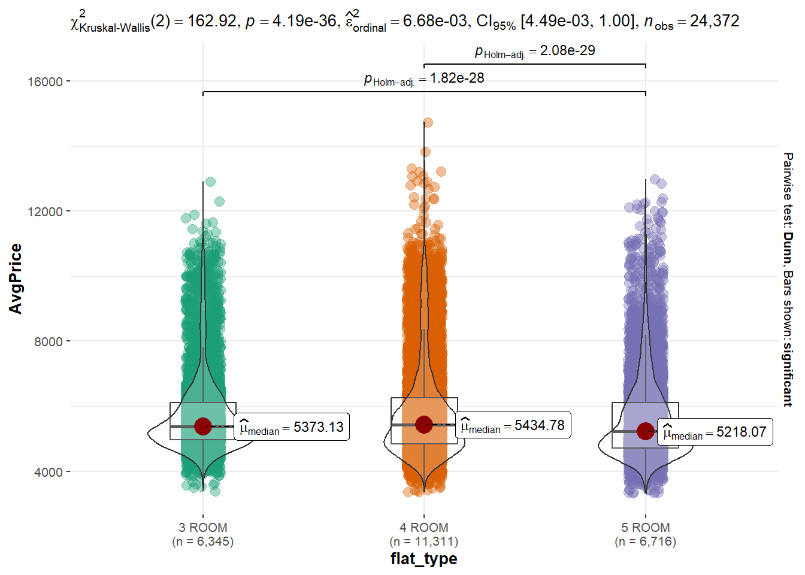
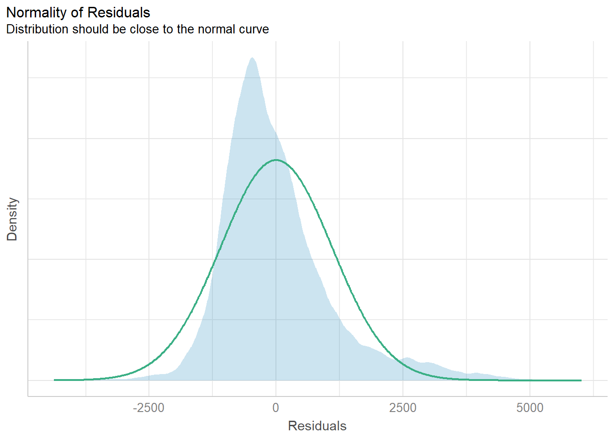
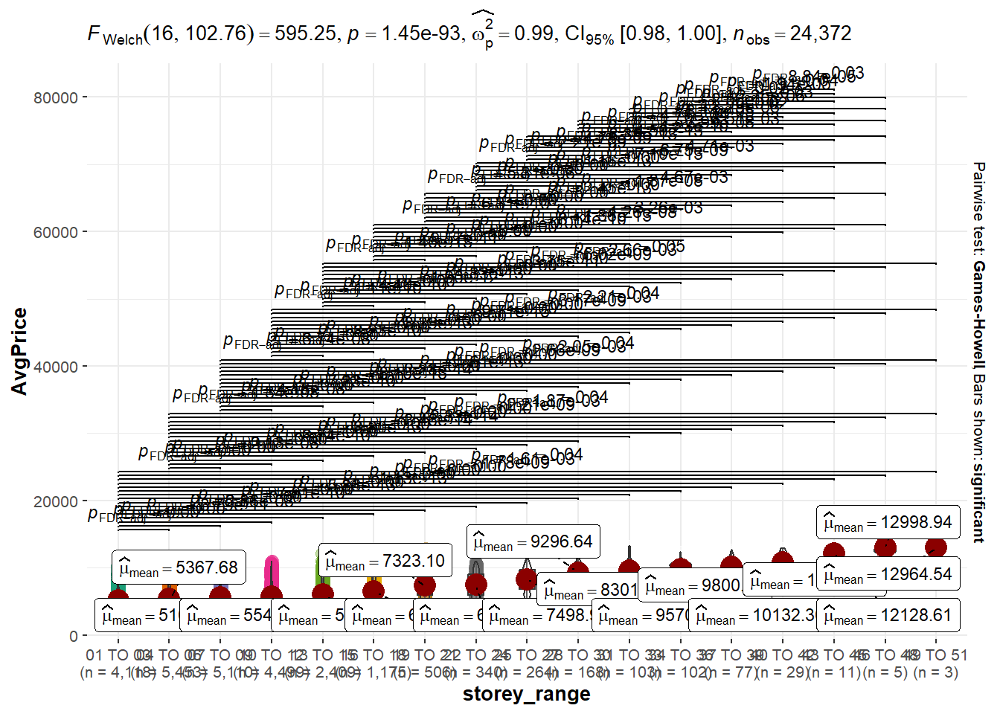
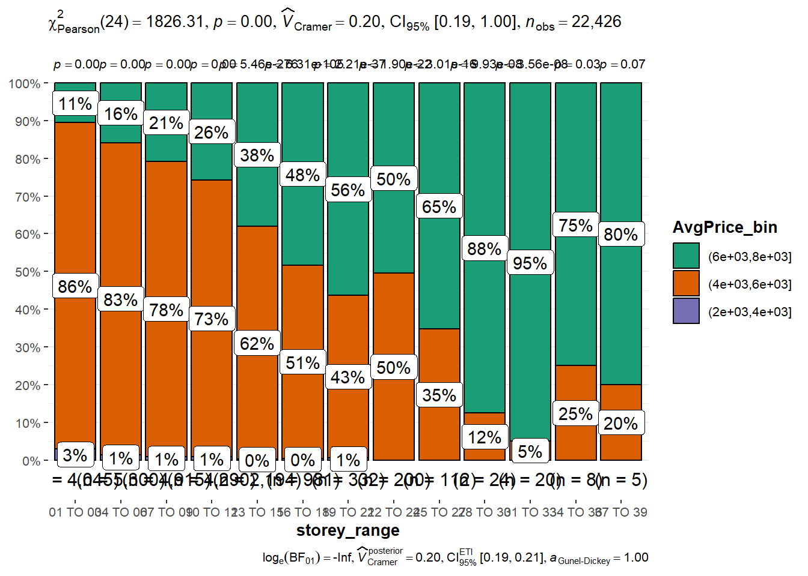
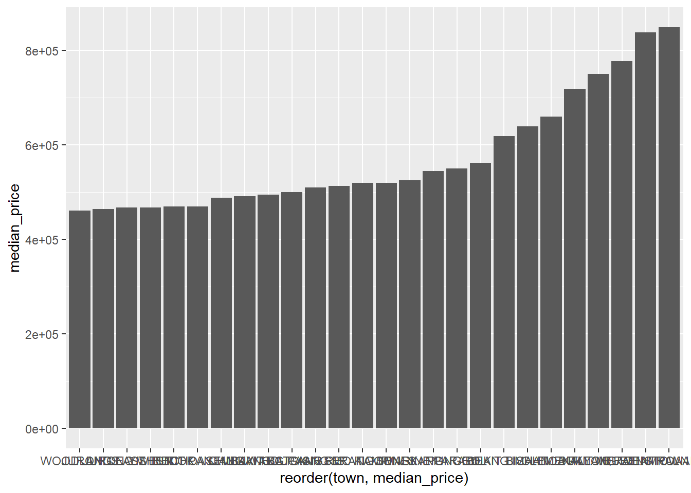
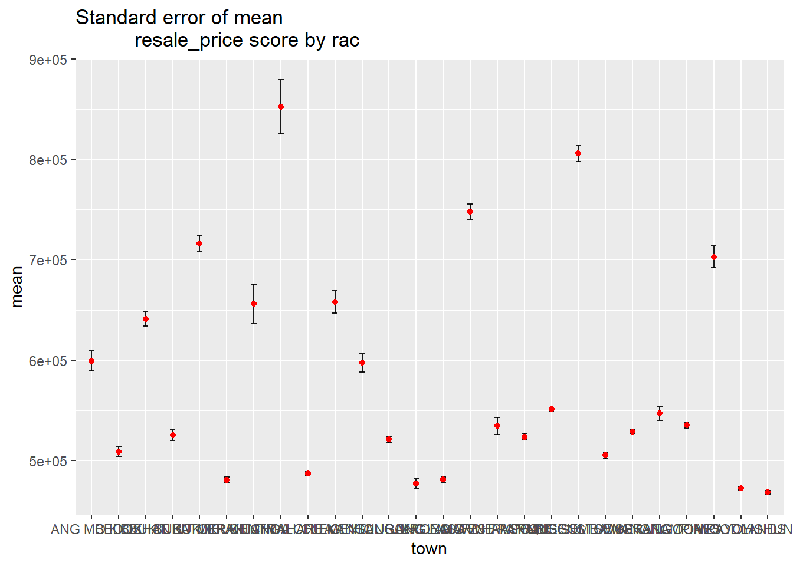
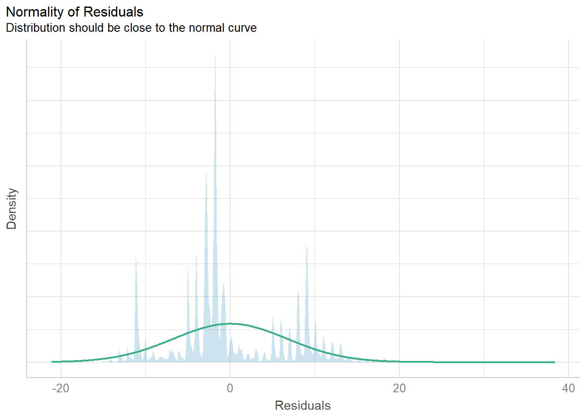
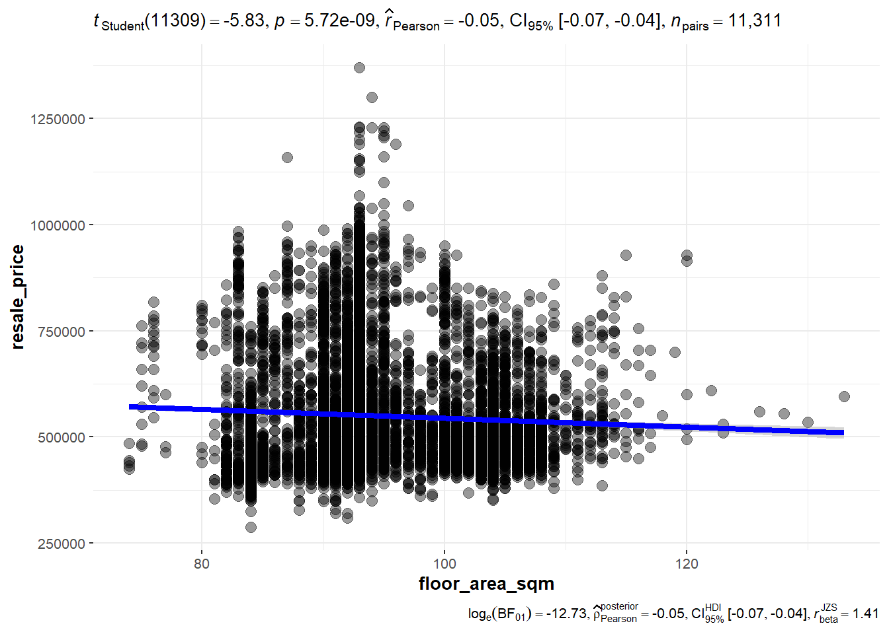

pacman::p_load(tidyverse, patchwork, ggthemes, hrbrthemes, ggrepel, ggiraph, ggstatsplot, PMCMRplus, performance, parameters, see, plotly, factoextra,ggplot2,forcats,dendextend,heatmaply,pheatmap,rmarkdown)TakeHome_Ex03
1.0 Task
In this take-home exercise, I need to uncover the salient patterns of the resale prices of public housing. We need to focus on 3-Room, 4-Room, and 5-room types. I would focus on different factors’ influence on resale price and after that, I would focus on analyzing the resale price from one type of house.
2.0 The data
Resale flat princes based on registration date from Jan-2017 onwards should be used to prepare the analytical visualization. It is available at Data.gov.sg.
3.0 Import the dataset and prepare the data
3.1 Installing and loading the required libraries
3.2 Importing the dataset and preparing the data
Flat_resale <- read_csv("data/2017-2022.csv")Rows: 146783 Columns: 11
── Column specification ────────────────────────────────────────────────────────
Delimiter: ","
chr (8): month, town, flat_type, block, street_name, storey_range, flat_mode...
dbl (3): floor_area_sqm, lease_commence_date, resale_price
ℹ Use `spec()` to retrieve the full column specification for this data.
ℹ Specify the column types or set `show_col_types = FALSE` to quiet this message.Flat_resale# A tibble: 146,783 × 11
month town flat_…¹ block stree…² store…³ floor…⁴ flat_…⁵ lease…⁶ remai…⁷
<chr> <chr> <chr> <chr> <chr> <chr> <dbl> <chr> <dbl> <chr>
1 2017-01 ANG MO… 2 ROOM 406 ANG MO… 10 TO … 44 Improv… 1979 61 yea…
2 2017-01 ANG MO… 3 ROOM 108 ANG MO… 01 TO … 67 New Ge… 1978 60 yea…
3 2017-01 ANG MO… 3 ROOM 602 ANG MO… 01 TO … 67 New Ge… 1980 62 yea…
4 2017-01 ANG MO… 3 ROOM 465 ANG MO… 04 TO … 68 New Ge… 1980 62 yea…
5 2017-01 ANG MO… 3 ROOM 601 ANG MO… 01 TO … 67 New Ge… 1980 62 yea…
6 2017-01 ANG MO… 3 ROOM 150 ANG MO… 01 TO … 68 New Ge… 1981 63 yea…
7 2017-01 ANG MO… 3 ROOM 447 ANG MO… 04 TO … 68 New Ge… 1979 61 yea…
8 2017-01 ANG MO… 3 ROOM 218 ANG MO… 04 TO … 67 New Ge… 1976 58 yea…
9 2017-01 ANG MO… 3 ROOM 447 ANG MO… 04 TO … 68 New Ge… 1979 61 yea…
10 2017-01 ANG MO… 3 ROOM 571 ANG MO… 01 TO … 67 New Ge… 1979 61 yea…
# … with 146,773 more rows, 1 more variable: resale_price <dbl>, and
# abbreviated variable names ¹flat_type, ²street_name, ³storey_range,
# ⁴floor_area_sqm, ⁵flat_model, ⁶lease_commence_date, ⁷remaining_lease3.3 Because we need to focus on 3-room, 4-room, and 5-room house type so I fiter out the data that we need.
Flat_resale1 <- filter(Flat_resale,flat_type=="3 ROOM"|flat_type=="4 ROOM"|flat_type=="5 ROOM")Flat_resale1# A tibble: 132,977 × 11
month town flat_…¹ block stree…² store…³ floor…⁴ flat_…⁵ lease…⁶ remai…⁷
<chr> <chr> <chr> <chr> <chr> <chr> <dbl> <chr> <dbl> <chr>
1 2017-01 ANG MO… 3 ROOM 108 ANG MO… 01 TO … 67 New Ge… 1978 60 yea…
2 2017-01 ANG MO… 3 ROOM 602 ANG MO… 01 TO … 67 New Ge… 1980 62 yea…
3 2017-01 ANG MO… 3 ROOM 465 ANG MO… 04 TO … 68 New Ge… 1980 62 yea…
4 2017-01 ANG MO… 3 ROOM 601 ANG MO… 01 TO … 67 New Ge… 1980 62 yea…
5 2017-01 ANG MO… 3 ROOM 150 ANG MO… 01 TO … 68 New Ge… 1981 63 yea…
6 2017-01 ANG MO… 3 ROOM 447 ANG MO… 04 TO … 68 New Ge… 1979 61 yea…
7 2017-01 ANG MO… 3 ROOM 218 ANG MO… 04 TO … 67 New Ge… 1976 58 yea…
8 2017-01 ANG MO… 3 ROOM 447 ANG MO… 04 TO … 68 New Ge… 1979 61 yea…
9 2017-01 ANG MO… 3 ROOM 571 ANG MO… 01 TO … 67 New Ge… 1979 61 yea…
10 2017-01 ANG MO… 3 ROOM 534 ANG MO… 01 TO … 68 New Ge… 1980 62 yea…
# … with 132,967 more rows, 1 more variable: resale_price <dbl>, and
# abbreviated variable names ¹flat_type, ²street_name, ³storey_range,
# ⁴floor_area_sqm, ⁵flat_model, ⁶lease_commence_date, ⁷remaining_lease3.4 The task require us to analysis 2022’s data so I filter 2022’s data. The following steps can filter out the data that we need.
Flat_resale2 <- Flat_resale1 %>%
separate(month, c("year", "months"), "-")
Flat_resale2# A tibble: 132,977 × 12
year months town flat_…¹ block stree…² store…³ floor…⁴ flat_…⁵ lease…⁶
<chr> <chr> <chr> <chr> <chr> <chr> <chr> <dbl> <chr> <dbl>
1 2017 01 ANG MO KIO 3 ROOM 108 ANG MO… 01 TO … 67 New Ge… 1978
2 2017 01 ANG MO KIO 3 ROOM 602 ANG MO… 01 TO … 67 New Ge… 1980
3 2017 01 ANG MO KIO 3 ROOM 465 ANG MO… 04 TO … 68 New Ge… 1980
4 2017 01 ANG MO KIO 3 ROOM 601 ANG MO… 01 TO … 67 New Ge… 1980
5 2017 01 ANG MO KIO 3 ROOM 150 ANG MO… 01 TO … 68 New Ge… 1981
6 2017 01 ANG MO KIO 3 ROOM 447 ANG MO… 04 TO … 68 New Ge… 1979
7 2017 01 ANG MO KIO 3 ROOM 218 ANG MO… 04 TO … 67 New Ge… 1976
8 2017 01 ANG MO KIO 3 ROOM 447 ANG MO… 04 TO … 68 New Ge… 1979
9 2017 01 ANG MO KIO 3 ROOM 571 ANG MO… 01 TO … 67 New Ge… 1979
10 2017 01 ANG MO KIO 3 ROOM 534 ANG MO… 01 TO … 68 New Ge… 1980
# … with 132,967 more rows, 2 more variables: remaining_lease <chr>,
# resale_price <dbl>, and abbreviated variable names ¹flat_type,
# ²street_name, ³storey_range, ⁴floor_area_sqm, ⁵flat_model,
# ⁶lease_commence_dateFlat_resale3 <- filter(Flat_resale2,year=="2022")
Flat_resale3# A tibble: 24,372 × 12
year months town flat_…¹ block stree…² store…³ floor…⁴ flat_…⁵ lease…⁶
<chr> <chr> <chr> <chr> <chr> <chr> <chr> <dbl> <chr> <dbl>
1 2022 01 ANG MO KIO 3 ROOM 320 ANG MO… 07 TO … 73 New Ge… 1977
2 2022 01 ANG MO KIO 3 ROOM 225 ANG MO… 07 TO … 67 New Ge… 1978
3 2022 01 ANG MO KIO 3 ROOM 331 ANG MO… 07 TO … 68 New Ge… 1981
4 2022 01 ANG MO KIO 3 ROOM 534 ANG MO… 07 TO … 82 New Ge… 1980
5 2022 01 ANG MO KIO 3 ROOM 578 ANG MO… 04 TO … 67 New Ge… 1980
6 2022 01 ANG MO KIO 3 ROOM 452 ANG MO… 01 TO … 83 New Ge… 1979
7 2022 01 ANG MO KIO 3 ROOM 560 ANG MO… 01 TO … 67 New Ge… 1980
8 2022 01 ANG MO KIO 3 ROOM 435 ANG MO… 04 TO … 67 New Ge… 1979
9 2022 01 ANG MO KIO 3 ROOM 435 ANG MO… 04 TO … 67 New Ge… 1979
10 2022 01 ANG MO KIO 3 ROOM 560 ANG MO… 10 TO … 67 New Ge… 1980
# … with 24,362 more rows, 2 more variables: remaining_lease <chr>,
# resale_price <dbl>, and abbreviated variable names ¹flat_type,
# ²street_name, ³storey_range, ⁴floor_area_sqm, ⁵flat_model,
# ⁶lease_commence_date4. Creating the Visualisation
4.1 I want to compare differnt house type’s resale_price’s median. But I need to decrease the influence of house size. So, I create one more column to store the average price/m² and named it AvgPrice.
Flat_resale4 <- mutate(Flat_resale3,AvgPrice=resale_price/floor_area_sqm)
Flat_resale4# A tibble: 24,372 × 13
year months town flat_…¹ block stree…² store…³ floor…⁴ flat_…⁵ lease…⁶
<chr> <chr> <chr> <chr> <chr> <chr> <chr> <dbl> <chr> <dbl>
1 2022 01 ANG MO KIO 3 ROOM 320 ANG MO… 07 TO … 73 New Ge… 1977
2 2022 01 ANG MO KIO 3 ROOM 225 ANG MO… 07 TO … 67 New Ge… 1978
3 2022 01 ANG MO KIO 3 ROOM 331 ANG MO… 07 TO … 68 New Ge… 1981
4 2022 01 ANG MO KIO 3 ROOM 534 ANG MO… 07 TO … 82 New Ge… 1980
5 2022 01 ANG MO KIO 3 ROOM 578 ANG MO… 04 TO … 67 New Ge… 1980
6 2022 01 ANG MO KIO 3 ROOM 452 ANG MO… 01 TO … 83 New Ge… 1979
7 2022 01 ANG MO KIO 3 ROOM 560 ANG MO… 01 TO … 67 New Ge… 1980
8 2022 01 ANG MO KIO 3 ROOM 435 ANG MO… 04 TO … 67 New Ge… 1979
9 2022 01 ANG MO KIO 3 ROOM 435 ANG MO… 04 TO … 67 New Ge… 1979
10 2022 01 ANG MO KIO 3 ROOM 560 ANG MO… 10 TO … 67 New Ge… 1980
# … with 24,362 more rows, 3 more variables: remaining_lease <chr>,
# resale_price <dbl>, AvgPrice <dbl>, and abbreviated variable names
# ¹flat_type, ²street_name, ³storey_range, ⁴floor_area_sqm, ⁵flat_model,
# ⁶lease_commence_date4.2 Two-sample mean test:
In the code chunk below, ggbetweenstats() is used to build a visual for two-sample mean test of AvgPrice by house types.
ggbetweenstats(
data = Flat_resale4,
x =flat_type,
y =AvgPrice,
type = "np",
messages = FALSE
)
From above chart, it is easy to find that 4-room’s AvgPrice is higher than others. It means in the same house size, 4-room house would more expensive than others and the 3-room house is more expensive than 5-room house.
4.3 checking normality assumption between AvgPrice and storey_range.
model1 <- lm(AvgPrice ~storey_range , data = Flat_resale4)
model1
Call:
lm(formula = AvgPrice ~ storey_range, data = Flat_resale4)
Coefficients:
(Intercept) storey_range04 TO 06 storey_range07 TO 09
5106.2 261.4 436.5
storey_range10 TO 12 storey_range13 TO 15 storey_range16 TO 18
579.2 961.1 1408.3
storey_range19 TO 21 storey_range22 TO 24 storey_range25 TO 27
2216.9 2392.7 3195.6
storey_range28 TO 30 storey_range31 TO 33 storey_range34 TO 36
4190.4 4464.2 4694.2
storey_range37 TO 39 storey_range40 TO 42 storey_range43 TO 45
5026.1 5701.7 7022.4
storey_range46 TO 48 storey_range49 TO 51
7892.7 7858.3 check_n <- check_normality(model1)plot(check_n)
4.4 Oneway ANOVA Test: Do a ANOVA Test to verify that is there any difference in AvgPrice based on different storeys.
H0: There is irrelevant between AvgPrice and storey_range.
H1: There is relevant between AvgPrice and storey_range.
ggbetweenstats(
data = Flat_resale4,
x = storey_range,
y = AvgPrice,
type = "p",
mean.ci = TRUE,
pairwise.comparisons = TRUE,
pairwise.display = "s",
p.adjust.method = "fdr",
messages = FALSE
)Warning: Number of labels is greater than default palette color count.
• Select another color `palette` (and/or `package`).
From above result, we can see that P<0.05. So we can reject H0. So, AvgPrice depends on the floor. The height of the floor affects the average price.
4.5 Exploring the relationship between resale_price and storey_range.
In order to explore more about the resale_price and storey_range.
exam1 <- Flat_resale4 %>%
mutate(AvgPrice_bin =
cut(AvgPrice,
breaks = c(0,2000,4000,6000,8000))
)ggbarstats(exam1,
x = AvgPrice_bin,
y = storey_range)
From above chart, we can see that before storey 37, the higher storey , the green color occupied more. Which means the higher storey, the higher AvgPrice.
5. Exploring one of house type: 4-Room type.
Because this house type is very popular in SG so we want to explore more about this type.
5.1 Data prepare: Filter out the 4-Room type data.
Flat_resale5 <- filter(Flat_resale4,flat_type=="4 ROOM")
Flat_resale5# A tibble: 11,311 × 13
year months town flat_…¹ block stree…² store…³ floor…⁴ flat_…⁵ lease…⁶
<chr> <chr> <chr> <chr> <chr> <chr> <chr> <dbl> <chr> <dbl>
1 2022 01 ANG MO KIO 4 ROOM 438 ANG MO… 10 TO … 92 New Ge… 1979
2 2022 01 ANG MO KIO 4 ROOM 556 ANG MO… 13 TO … 92 New Ge… 1980
3 2022 01 ANG MO KIO 4 ROOM 419 ANG MO… 07 TO … 99 New Ge… 1979
4 2022 01 ANG MO KIO 4 ROOM 466 ANG MO… 04 TO … 93 New Ge… 1984
5 2022 01 ANG MO KIO 4 ROOM 472 ANG MO… 01 TO … 92 New Ge… 1979
6 2022 01 ANG MO KIO 4 ROOM 405 ANG MO… 01 TO … 92 New Ge… 1979
7 2022 01 ANG MO KIO 4 ROOM 547 ANG MO… 01 TO … 92 New Ge… 1981
8 2022 01 ANG MO KIO 4 ROOM 415 ANG MO… 01 TO … 92 New Ge… 1979
9 2022 01 ANG MO KIO 4 ROOM 324 ANG MO… 04 TO … 98 New Ge… 1978
10 2022 01 ANG MO KIO 4 ROOM 121 ANG MO… 10 TO … 92 New Ge… 1978
# … with 11,301 more rows, 3 more variables: remaining_lease <chr>,
# resale_price <dbl>, AvgPrice <dbl>, and abbreviated variable names
# ¹flat_type, ²street_name, ³storey_range, ⁴floor_area_sqm, ⁵flat_model,
# ⁶lease_commence_date5.2 The median of resale_price in different towns.
In order to explore the price in different towns, we need to group by every town and calculate the median of resale_price:
Flat_resale6 <- Flat_resale5 %>%
group_by(town) %>%
summarize(median_price = median(resale_price))
Flat_resale6# A tibble: 26 × 2
town median_price
<chr> <dbl>
1 ANG MO KIO 513000
2 BEDOK 470000
3 BISHAN 640000
4 BUKIT BATOK 495000
5 BUKIT MERAH 750000
6 BUKIT PANJANG 470000
7 BUKIT TIMAH 618444
8 CENTRAL AREA 849044
9 CHOA CHU KANG 488000
10 CLEMENTI 660000
# … with 16 more rowsggplot(data=Flat_resale6,aes(x=reorder(town,median_price),y=median_price))+
geom_bar(stat = "identity")
From above data and chart, we can find that some towns have a really high median of resale_price, although all of them are 4-room house. We can explore step further.
5.3 Visualizing the uncertainty of point estimates
my_sum <- Flat_resale5 %>%
group_by(town) %>%
summarise(
n=n(),
mean=mean(resale_price),
sd=sd(resale_price)
) %>%
mutate(se=sd/sqrt(n-1))knitr::kable(head(my_sum), format = 'html')| town | n | mean | sd | se |
|---|---|---|---|---|
| ANG MO KIO | 305 | 599339.7 | 172944.64 | 9919.055 |
| BEDOK | 462 | 508590.4 | 101857.56 | 4743.979 |
| BISHAN | 206 | 640889.7 | 103639.45 | 7238.493 |
| BUKIT BATOK | 362 | 525035.7 | 101134.38 | 5322.862 |
| BUKIT MERAH | 358 | 716379.4 | 154082.78 | 8154.925 |
| BUKIT PANJANG | 462 | 480776.2 | 54351.37 | 2531.396 |
ggplot(my_sum) +
geom_errorbar(
aes(x=town,
ymin=mean-se,
ymax=mean+se),
width=0.2,
colour="black",
alpha=0.9,
size=0.5) +
geom_point(aes
(x=town,
y=mean),
stat="identity",
color="red",
size = 1.5,
alpha=1) +
ggtitle("Standard error of mean
resale_price score by rac")Warning: Using `size` aesthetic for lines was deprecated in ggplot2 3.4.0.
ℹ Please use `linewidth` instead.
Model Diagnostic: checking normality assumption
In the code chunk, check_normality() of performance package.
area_price <- lm(floor_area_sqm ~resale_price , data = Flat_resale5)check_n <- check_normality(area_price)plot(check_n)
ggscatterstats(
data = Flat_resale5,
x =floor_area_sqm ,
y = resale_price,
marginal = FALSE,
)